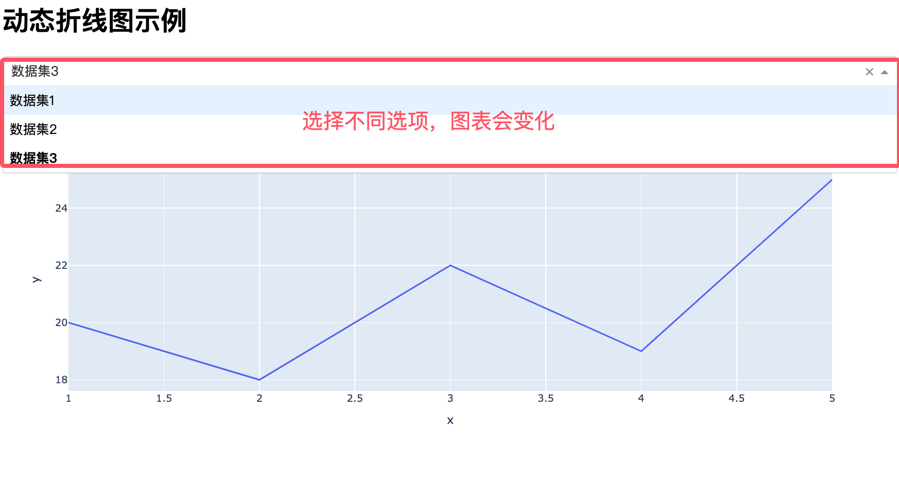

Dash Dynamic Update Chart
In modern data visualization applications, dynamically updating charts is a very important feature that allows users to view data changes in real time without refreshing the entire page.
In Dash, the core mechanism for dynamically updating charts isCallback Function, callback functions allow you to dynamically update chart content when users interact with the page (such as clicking buttons, selecting dropdown menus, etc.).
Basic structure of a callback function
A typical callback function consists of the following parts:
- Input: Defines the component and its properties that trigger the callback.
- Output: Define the components and their properties that need to be updated.
- Callback function body: Calculates and returns output values based on the input values.
For detailed explanation of Dash callback functions, see:https://www.example.com/dash/dash-callback.html。
Simple Dynamic Update Chart
Through callback functions, chart data and layout can be dynamically updated.
The following is a complete Dash application example, where users can select a dataset through a dropdown menu to dynamically display the corresponding line chart:
Example
import plotly.express as px
import pandas as pd
# Create Dash App
app = Dash(__name__)
# Define example dataset
datasets = {
'Dataset 1': pd.DataFrame({
'x': [1, 2, 3, 4, 5],
'y': [10, 15, 13, 17, 21]
}),
'Dataset 2': pd.DataFrame({
'x': [1, 2, 3, 4, 5],
'y': [5, 10, 8, 12, 15]
}),
'Dataset 3': pd.DataFrame({
'x': [1, 2, 3, 4, 5],
'y': [20, 18, 22, 19, 25]
})
}
# Define Layout
app.layout = html.Div([
html.H1("Dynamic Line Chart Example"), # Heading
dcc.Dropdown(
id='dataset-dropdown', # Dropdown ID
options=[{'label': name, 'value': name} for name in datasets.keys()], # Dropdown menu options
value='Dataset 1' # Default Selected Dataset
),
dcc.Graph(id='line-chart') # Graph Component for Displaying Line Charts
])
# Define the callback function
@app.callback(
Output('line-chart', 'figure'), # Output to the figure attribute of the Graph component with id 'line-chart'
Input('dataset-dropdown', 'value') # Inputcome自 id is 'dataset-dropdown' ofdropdown menuof value Property
)
def update_line_chart(selected_dataset):
# Get the Selected Dataset
df = datasets[selected_dataset]
# Create a Line Chart with Plotly Express
fig = px.line(df, x='x', y='y', title=f'{selected_dataset} Line Chart')
return fig
# Run the app
if __name__ == '__main__':
app.run_server(debug=True) # Start the app, debug=True enables debug mode
Displayed as shown below:

Code explanation
1. Layout Section：
-
Usage
html.H1Create a title "Calculate Square". -
Usage
dcc.InputCreate a number input box,idisnumber-input, the type isnumber。 -
Usage
html.DivCreate an area for displaying results,idisoutput。
2. Callback Function：
-
Usage
@app.callbackDecorator defines the callback function. -
input is
number-inputof the input fieldvalueProperty. -
output is
outputDiv'schildrenProperty. -
In the callback function:
-
Check whether the input is empty.
-
Convert the input to a floating-point number and calculate its square.
-
Return the formatted result.
-
4. Run the Application：
-
Usage
app.run_server(debug=True)Launch the app,debug=TrueIndicates debug mode is enabled.